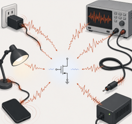
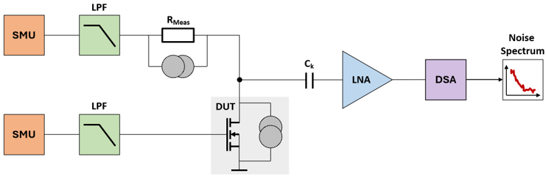
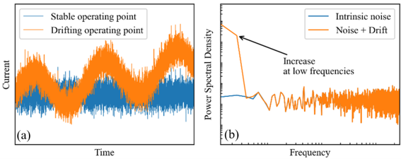
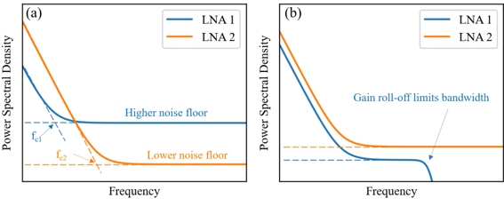
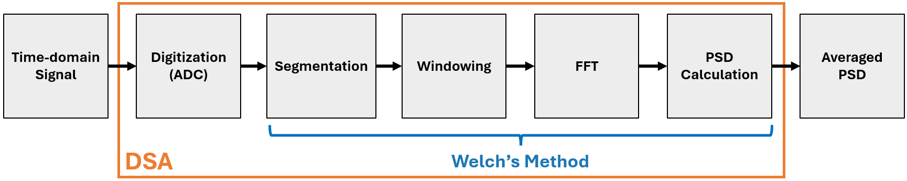

The Measurement Challenge
Low-frequency noise (LFN) measurements are among the most demanding experiments in electronic characterization. Unlike conventional electrical measurements, where signals are intentionally large and easy to detect, LFN measurements attempt to resolve extremely small fluctuations hidden within the device current itself. At these scales, the measurement setup can easily become noisier than the device under investigation. Power-line interference, thermal drift, grounding problems, vibrations, and even moving cables can all generate signals that mask the intrinsic device noise. As a result, building a stable and reliable measurement setup together with careful measurement practices becomes just as important as the device being characterized.

Anatomy of Noise Measurement Setup
The signal chain of the measurement setup should be carefully designed to isolate the device under test (DUT) from external interferences. A typical setup comprises of bias sources connected to the DUT, which is biased under controlled operating conditions. The resulting fluctuations from the DUT are continuously amplified using a low-noise amplifier (LNA) and transformed into the frequency domain using Fast Fourier Transform (FFT) to extract the Power Spectral Density (PSD).
Figure 2 shows a simplified instrumentation chain for a typical low-frequency noise measurement setup using a transistor as the DUT. Independent source-measure units (SMUs) provide stable drain and gate bias conditions, while low-pass filters (LPFs) suppress noise originating from the bias circuitry itself. A measurement resistor, $R_{\mathrm{Meas}}$, converts the drain current fluctuations into measurable voltage fluctuations. Since the DC bias component is several orders of magnitude larger than the noise signal of interest, an AC-coupling capacitor, $C_k$, blocks the DC component and passes only the small noise signal to the LNA. The amplified noise signal is then fed into a dynamic signal analyzer (DSA), which incorporates analog-to-digital conversion and FFT processing to compute the PSD.

Bias Stability and Long-term Drift
The lower the frequency being measured, the longer the required observation time. Accessing the millihertz (mHz) regime can require measurements lasting several hours or even days, placing stringent demands on bias stability and environmental control. Over such timescales, even small variations in operating conditions can introduce artifacts that obscure the intrinsic device noise.
Long-term drift typically appears as a gradual change in the average device current over time. As illustrated in Figure 3, a stable operating point produces fluctuations around a constant mean value, whereas an unstable bias introduces slow trends and systematic variations. These effects may originate from bias-source instability, self-heating, ambient temperature fluctuations, contact degradation, or slow charging and discharging processes within the device itself. The consequences become particularly apparent in the frequency domain. Since drift contains significant low-frequency components, it artificially elevates the measured PSD at the lowest frequencies, potentially leading to misinterpretation of the noise data. For this reason, maintaining a stable bias is one of the most critical aspects of any LFN measurement setup.

Battery-powered biasing is often considered the ideal solution because it provides a cleaner DC source inherently isolated from power-line disturbances. In practice, batteries become cumbersome for automated measurements, voltage sweeps, and long-duration experiments. Modern SMUs offer a far more practical alternative, combining programmable biasing with integrated measurement capabilities. Although SMUs may introduce residual output noise from internal regulators and digital control circuitry, their flexibility makes them the preferred choice in most laboratory environments. LPFs are commonly inserted between the bias source and the DUT to suppress the residual noise. The filter cutoff frequency should be chosen low enough to reject unwanted disturbances, yet high enough to avoid excessively slow stabilization after a bias change.
Low-noise Amplification
The amplifier is one of the most critical components in an LFN measurement system. Regardless of how carefully the DUT is biased or how well environmental disturbances are controlled, the measured spectrum will ultimately be limited by the noise and bandwidth of the front-end amplifier. Several amplifier characteristics influence the quality of an LFN measurement. First, the amplifier noise floor must be sufficiently low so that the measured PSD remains dominated by the DUT rather than the measurement system itself. Second, the amplifier flicker corner should be low enough to avoid obscuring the low-frequency behavior of interest. Finally, the amplifier must provide adequate bandwidth to capture the desired frequency range without introducing excessive attenuation.
Figure 4(a) illustrates the noise characteristics of two different LNAs. LNA 1 exhibits a lower flicker corner frequency, $f_{c1}$, making it better suited for measurements at very low frequencies. However, this advantage comes at the expense of a higher white-noise floor. In contrast, LNA 2 offers a substantially lower white-noise floor but exhibits a higher flicker corner frequency, $f_{c2}$. Measurements focused on the deepest low-frequency regime may benefit from a lower flicker corner, whereas measurements requiring the highest sensitivity at moderate and high frequencies often favor a lower white-noise floor. The optimum choice depends on both the expected DUT noise level and the frequency range of interest.
In practice, amplifier selection involves more than simply minimizing the noise floor. Figure 4(b) highlights the trade-off between measurement sensitivity and bandwidth. LNA 1 achieves a lower effective measurement floor, enabling the detection of smaller fluctuations from the DUT. However, its usable bandwidth is limited by the amplifier gain response, causing the measured spectrum to roll off at higher frequencies. LNA 2, on the other hand, maintains a wider measurement bandwidth but exhibits a higher overall noise floor. Consequently, although LNA 2 may be less sensitive to small fluctuations, it can accurately characterize noise over a broader frequency range.

The choice between different amplifier architectures follows similar considerations. Voltage amplifiers are often preferred when the DUT exhibits a relatively low output impedance, whereas current amplifiers or transimpedance amplifiers can provide superior sensitivity for high-impedance devices and current-noise measurements. Regardless of the topology, the fundamental requirement remains the same, the amplifier noise contribution must remain below the DUT noise across the frequency range of interest while providing sufficient bandwidth for the intended measurement.
Ultimately, there is no universal amplifier for all LFN measurements. Different applications place different demands on noise floor, flicker corner, bandwidth, and DUT impedance. As a result, practical LFN systems often employ different amplifier configurations, each optimized for a particular measurement objective.
Turning Fluctuations into Spectra
The output of the LNA is still a time-domain signal containing the amplified fluctuations of the DUT. To determine how the noise power is distributed across frequency, the signal must be digitized and transformed into a corresponding PSD. The conversion begins with digitization of the analog waveform by the ADC. The resulting digital time record is divided into a series of overlapping segments, allowing multiple independent spectral estimates to be extracted from a single measurement. To minimize spectral leakage arising from the finite length of each segment, a window function such as the most widely used Hann window [1] is applied. Each windowed segment is then transformed using the FFT, which results in a set of coefficients which are used in the estimation of the PSD of each segment. The PSD obtained from a single segment exhibits significant statistical scatter. Welch's method [2] addresses this limitation by averaging the PSDs calculated from all segments, producing a smoother and more statistically robust estimate of the underlying noise spectrum.

The measurable frequency range is ultimately determined by the acquisition settings. The sampling frequency defines the highest observable frequency according to the Nyquist criterion [3], whereas the total acquisition time determines the lowest resolvable frequency and the achievable spectral resolution. Consequently, characterization of LFN in the millihertz regime often requires measurement durations extending over several hours.
Conclusion
LFN measurements represent one of the most sensitive electrical characterization techniques available for modern electronic devices. Extracting meaningful information requires more than simply measuring current fluctuations. It demands careful attention to bias stability, shielding, amplification, and spectral analysis. Accurate and reliable LFN measurements provide a powerful window into defect dynamics, carrier transport, and device reliability, enabling engineers and researchers to probe physical processes that are often invisible to conventional electrical characterization techniques.
References
- F. J. Harris, “On the use of windows for harmonic analysis with the discrete Fourier transform,” Proceedings of the IEEE, vol. 66, no. 1, pp. 51–83, Jan. 1978.
- P. Welch, “The use of fast Fourier transform for the estimation of power spectra: A method based on time averaging over short, modified periodograms,” IEEE Transactions on Audio and Electroacoustics, vol. 15, no. 2, pp. 70–73, June 1967.
- H. Nyquist, “Certain Topics in Telegraph Transmission Theory,” Transactions of the American Institute of Electrical Engineers, vol. 47, no. 2, pp. 617–644, April 1928.